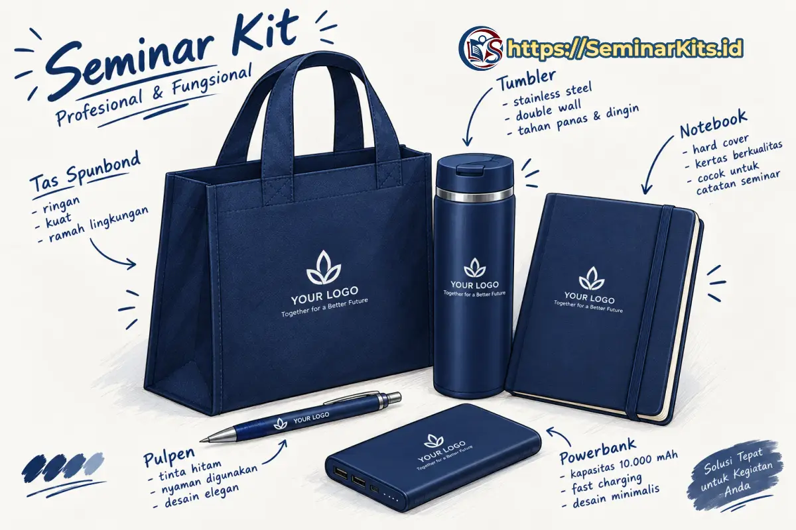

Ringkasan Jawaban Cepat (Direct Answer)
Jenis seminar kit secara umum dikelompokkan ke dalam 5 kategori utama berdasarkan alokasi anggaran, kelengkapan item, dan tingkat formalitas acara: (1) Paket Hemat berbasis tas spunbond dan blocknote ekonomis; (2) Paket Standar dengan totebag kanvas/blacu, notebook spiral, dan lanyard sublimasi; (3) Paket Premium/VIP dengan buku agenda kulit hardcover, tumbler stainless vakum SUS304, serta hardbox eksklusif; (4) Paket Custom yang komposisi itemnya dirancang bebas sesuai pagu RAB; serta (5) Paket Ramah Lingkungan (Eco-Friendly) yang mengedepankan material daur ulang alami bersertifikasi.
- 5 Kategori Utama: Memahami klasifikasi Paket Hemat, Standar, Premium, Custom, dan Eco-Friendly mencegah panitia overbudget atau salah pilih spesifikasi.
- Segmentasi Hadirin: Bedakan secara tegas antara kit untuk peserta umum massal (fokus fungsi alat tulis & tas) dengan kit tamu VIP/narasumber (fokus kemewahan packaging hardbox & tumbler termal).
- Fleksibilitas Konfigurasi: Paket 3-in-1 (tas, pulpen, buku) sangat ideal untuk seminar teori, sedangkan paket 5-in-1 (tambahan tumbler dan lanyard/flashdisk) wajib untuk workshop dan pelatihan berhari-hari.
- Keberlanjutan Nilai Pakai: Memilih jenis kit berkualitas memastikan barang promosi digunakan berulang kali pasca-acara oleh peserta di kantor maupun kampus.
Dalam perencanaan sebuah perhelatan acara, tidak ada satu formula paket perlengkapan yang cocok untuk semua situasi (one size does not fit all). Kebutuhan seminar berskala ribuan mahasiswa tentu menuntut efisiensi biaya yang jauh berbeda dibandingkan pengadaan set cinderamata untuk dewan juri, pemateri pakar, atau tamu kehormatan kementerian.
Oleh karena itu, produsen manufaktur merchandise modern seperti Seminarkits.id membagi lini produk ke dalam beberapa jenis seminar kit yang spesifik. Dengan memahami karakteristik masing-masing jenis, Anda dapat menentukan pilihan yang paling efisien bagi anggaran kepanitiaan tanpa mengorbankan kesan profesionalitas instansi penyelenggara.
1. Cara Mengelompokkan Jenis Seminar Kit
Klasifikasi jenis seminar kit didasarkan pada empat dimensi pertimbangan utama yang saling berkaitan:
- Berdasarkan Tingkat Anggaran (Tiering Biaya): Membagi paket dari tier ekonomis (di bawah Rp 25.000), tier standar fungsional (Rp 30.000 – Rp 55.000), hingga tier eksekutif VIP (di atas Rp 150.000).
- Berdasarkan Jumlah Komponen Item: Mengenal formula paket 3-in-1 (tas, pulpen, buku), paket 4-in-1 (ditambah lanyard/ID card), hingga paket 5-in-1 dan 6-in-1 (dilengkapi tumbler stainless, flashdisk modul, dan pouch).
- Berdasarkan Profil Hadirin dan Tingkat Formalitas: Menyesuaikan estetika paket untuk peserta umum massal, delegasi instansi, pimpinan kedinasan, atau tamu VVIP.
- Berdasarkan Pendekatan Nilai (Value Proposition): Menghadirkan paket dengan orientasi khusus seperti paket hemat volume besar, paket custom identitas korporat, atau paket sustainable eco-friendly ramah lingkungan.
2. Seminar Kit Hemat (Ekonomis & Ramah Anggaran)
Seminar kit hemat dirancang khusus untuk memfasilitasi acara-acara yang melibatkan ratusan hingga ribuan peserta dengan alokasi Rencana Anggaran Biaya (RAB) yang sangat ketat. Fokus utama dari jenis ini adalah pemenuhan fungsi dasar operasional menulis tanpa membebani keuangan panitia.
Ciri khas utama dari seminar kit hemat meliputi penggunaan tas spunbond (non-woven) 75 gsm model jinjing atau tali lipat samping, buku catatan model blocknote jilid lem ukuran A5 dengan sampul art carton 230 gsm isi 25–30 lembar, serta pulpen promosi plastik dengan cetak sablon logo 1 warna. Meskipun berbiaya rendah, kualitas cetak dan kerapian jahitan tetap dijaga agar tidak terkesan murahan.
- Kisaran Harga: Rp 15.000 – Rp 25.000 per paket.
- Komposisi Favorit: Paket 3 in 1 (Tas Spunbond + Blocknote A5 + Pulpen Promosi).
- Target Acara: Kuliah umum kampus, sosialisasi dinas massal, orientasi studi mahasiswa baru, dan webinar hybrid luring.
3. Seminar Kit Standar (Pilihan Fungsional Terpopuler)
Seminar kit standar merupakan kategori paling laris (best seller) dalam industri pengadaan event di Indonesia. Jenis ini menawarkan titik temu terbaik antara estetika yang pantas, daya tahan material yang lama, dan harga yang tetap masuk akal bagi kas organisasi.
Pada kategori ini, material tas ditingkatkan menggunakan kain blacu krem alami atau kain kanvas drill yang kokoh dan modis. Buku catatan menggunakan model notebook jilid spiral wire-o A5 yang mudah dilipat penuh saat peserta mencatat di kursi tanpa meja. Selain itu, paket standar selalu menyertakan tali lanyard bahan tisu sublimasi full-color beserta wadah kartu identitas (ID card holder) untuk keperluan validasi akses di area gedung acara.

- Kisaran Harga: Rp 30.000 – Rp 55.000 per paket.
- Komposisi Favorit: Paket 4 in 1 (Tote Bag Kanvas + Notebook Spiral A5 + Pulpen Stylus + Lanyard & ID Card).
- Target Acara: Seminar nasional, workshop keterampilan, bimbingan teknis (bimtek) instansi pemerintah, dan pelatihan sertifikasi keahlian.
4. Seminar Kit Premium atau VIP (Eksklusif & Berprestise)
Jika acara Anda dihadiri oleh narasumber pakar internasional, pejabat eselon, dewan direksi BUMN, pimpinan perusahaan mitra, atau peserta workshop berbayar jutaan rupiah, maka seminar kit premium adalah standar mutlak yang harus disediakan. Memberikan paket murah kepada tamu kehormatan berisiko merusak citra profesional penyelenggara.
Karakteristik jenis VIP menonjolkan sentuhan kemewahan: kemasan kotak hardbox magnetik eksklusif dengan lapisan busa spons cetak presisi (die-cut foam), buku agenda bersampul kulit sintetis dengan finishing emboss emas atau deboss elegan, tumbler stainless vakum SUS304 berlayar LED digital penunjuk suhu air, serta pulpen metal eksekutif berbobot mantap dengan ukiran laser grafir nama instansi.

- Kisaran Harga: Rp 75.000 – Rp 250.000+ per set (bergantung konfigurasi dan bahan kotak).
- Komposisi Favorit: Executive Gift Set (Hardbox Custom + Agenda Kulit Organizer + Tumbler Stainless LED + Pulpen Metal Grafir + Flashdisk Metal).
- Target Acara: Konferensi internasional, rapat umum pemegang saham (RUPS), forum direksi, cenderamata narasumber utama, dan corporate executive retreat. Pelajari spesifikasi lengkapnya di halaman Seminar Kit Premium.
5. Seminar Kit Custom (Modular & Bebas Konfigurasi)
Bagi organisasi yang memiliki kebutuhan spesifik di luar paket template, seminar kit custom memberikan fleksibilitas tanpa batas. Pada jenis ini, panitia memiliki kendali penuh untuk menentukan:
- Kombinasi Modular Item: Bebas memadupadankan item sesuai kebutuhan lapangan, misalnya menggabungkan tas laptop cordura dengan tumbler sport dan flashdisk kartu tanpa memerlukan buku catatan.
- Kesesuaian Pagu Anggaran (RAB Matching): Vendor dapat memformulasikan bahan dan gramasi secara presisi agar total biaya pesanan pas dengan alokasi rupiah yang telah disahkan divisi keuangan.
- Penerapan Brand Guidelines Ketat: Warna kain tas diwarnai khusus (custom dye), tali lanyard dicetak gradasi pantone persis logo perusahaan, serta penempatan logo sponsor ganda di titik-titik strategis barang.
- Pilihan Merchandise Tematik: Penambahan item unik seperti payung lipat otomatis, pouch kabel serbaguna, mug enamel, atau topi rimba untuk kegiatan diklat lapangan luar ruangan (outdoor). Pelajari mekanismenya di halaman Seminar Kit Custom.
6. Seminar Kit Ramah Lingkungan (Eco-Friendly Set)
Seiring dengan meningkatnya kepedulian global terhadap kelestarian alam dan penerapan prinsip ESG (Environmental, Social, and Governance) di kalangan korporasi serta institusi pendidikan, seminar kit eco-friendly kini menjadi tren terdepan yang sangat diminati.
Paket jenis ini menghindari material plastik sekali pakai dan menggantinya dengan bahan-bahan terbarukan:
- Tas Serat Goni / Katun Unbleached: Menggunakan serat rami alami (jute) atau kain katun blacu mentah tanpa pemutih kimia yang 100% dapat terurai secara hayati (biodegradable).
- Notebook Kertas Daur Ulang (Recycled Kraft): Sampul kertas kraft daur ulang dengan lembaran dalam bergaris berbahan bookpaper ramah lingkungan bersertifikat FSC.
- Pulpen Jerami Gandum (Wheat Straw): Bodi pulpen terbuat dari olahan limbah serat jerami gandum alami yang kuat namun dapat terurai alami saat dibuang.
- Tumbler dan Set Sedotan Stainless: Mengurangi ribuan gelas plastik air mineral di gedung seminar, sekaligus menjadi perlengkapan minum pribadi yang higienis.
7. Tabel Perbandingan Karakteristik Jenis Seminar Kit
Berikut adalah matriks komparasi ringkas untuk membantu Anda mengevaluasi perbedaan mendasar dari masing-masing kategori seminar kit:
| Jenis Seminar Kit | Material Utama | Kelengkapan Item | Estimasi Biaya | Kesan Branding |
|---|---|---|---|---|
| Paket Hemat | Spunbond 75 gsm, kertas HVS tipis, plastik ABS | Tas spunbond + Blocknote A5 + Pulpen sablon | Rp 15.000 – Rp 25.000 | Ekonomis & Fungsional |
| Paket Standar | Kain blacu/kanvas drill, kawat wire-o, pita tisu | Tote bag + Notebook spiral + Lanyard ID card + Pulpen | Rp 30.000 – Rp 55.000 | Rapi & Modis |
| Paket Premium / VIP | Hardbox tebal, kulit sintetis, stainless SUS304, metal | Box magnetik + Agenda kulit + Tumbler LED + Pulpen metal | Rp 75.000 – Rp 250.000+ | Mewah & Prestisius |
| Paket Custom | Bebas ditentukan (Cordura, kulit, kanvas, dll.) | Kombinasi modular bebas (USB, payung, pouch, dll.) | Fleksibel mengikuti RAB | Unik & Personal |
| Paket Eco-Friendly | Serat goni alami, kraft daur ulang, wheat straw | Totebag goni + Eco notebook + Pulpen jerami + Sedotan | Rp 45.000 – Rp 95.000 | Peduli Lingkungan & Modern |
8. Jenis Seminar Kit Berdasarkan Acara
Kesesuaian jenis kit dengan konteks acara akan memaksimalkan nilai manfaat yang dirasakan peserta:
Seminar Kampus & Mahasiswa
Pilihan terbaik adalah Jenis Hemat atau Standar Blacu. Mahasiswa lebih mengutamakan totebag berdesain visual kekinian yang dapat dipakai kuliah sehari-hari, buku catatan spiral untuk merangkum materi, serta pulpen berdesain ergonomis.
Workshop dan Pelatihan Teknis (Bimtek)
Pilihan terbaik adalah Jenis Standar Fungsional atau Custom 5-in-1. Karena sesi pelatihan menuntut konsentrasi berjam-jam, peserta membutuhkan botol minum tumbler pribadi, buku agenda berhalaman tebal, serta flashdisk modul studi kasus.
Event Perusahaan & Gathering Korporat
Pilihan terbaik adalah Jenis Custom Corporate atau Premium. Cinderamata mencerminkan budaya perusahaan dan mempererat loyalitas karyawan maupun relasi bisnis melalui buku agenda berlogo timbul dan tumbler eksklusif.
Konferensi Nasional & Internasional
Pilihan terbaik adalah Kombinasi Paket Standar untuk Delegasi Umum dan Paket VIP Hardbox untuk Pembicara. Skema bertingkat ini memastikan efisiensi anggaran total sekaligus memberikan penghormatan tertinggi bagi narasumber utama.


9. Cara Memilih Jenis Seminar Kit yang Tepat
Untuk mengambil keputusan terbaik dalam rapat pleno kepanitiaan, ikuti 4 langkah terarah berikut:
- Hitung Pagu Biaya Bersih per Peserta: Bagilah total anggaran pos merchandise dengan jumlah estimasi hadirin (ditambah 5–10% cadangan). Angka hasil bagi tersebut langsung mengerucutkan kategori paket yang realistis.
- Petakan Durasi dan Format Kegiatan: Acara kilat setengah hari tidak memerlukan tas ransel atau tumbler mewah, cukup paket 3-in-1. Sebaliknya, pelatihan intensif 3 hari di hotel membutuhkan instrumen berdaya guna tinggi.
- Terapkan Strategi Paket Dual-Tier: Jangan ragu membagi pesanan menjadi dua jenis: 90% paket standar untuk hadirin umum, dan 10% paket premium ber-hardbox untuk narasumber ahli, VIP, dan tamu kementerian.
- Konsultasikan Mockup Visual Sebelum Produksi: Mintalah vendor profesional seperti Seminarkits.id untuk membuatkan digital 3D visual preview logo instansi Anda pada barang agar hasil akhir benar-benar memuaskan.
10. FAQ (Tanya Jawab Seputar Jenis Seminar Kit)
Berikut adalah kumpulan pertanyaan yang sering diajukan seputar klasifikasi dan pemesanan jenis seminar kit:
Secara garis besar, seminar kit terbagi menjadi 5 kategori utama: Seminar Kit Hemat (tas spunbond dan alat tulis dasar), Seminar Kit Standar (totebag kanvas/blacu, notebook spiral, lanyard, pulpen), Seminar Kit Premium VIP (agenda kulit, tumbler stainless SUS304, packaging hardbox), Seminar Kit Custom (kombinasi item bebas sesuai RAB), serta Seminar Kit Eco-Friendly (material daur ulang alami bersertifikat).
Perbedaan mendasar terletak pada kualitas material kemasan, kelengkapan item, dan teknik penyelesaian branding. Paket hemat menggunakan bahan spunbond dan blocknote lem untuk efisiensi biaya massal. Paket standar memakai kain blacu/kanvas dan notebook spiral yang awet. Paket premium menggunakan buku agenda hardcover kulit, tumbler vakum, pulpen metal grafir, dan box magnetik elegan berkesan prestisius.
Paket custom sangat disarankan jika acara Anda memiliki alokasi anggaran spesifik yang tidak pas dengan paket template, membutuhkan merchandise tematik khusus (seperti flashdisk modul, payung, atau pouch charger), atau memiliki panduan identitas visual (brand guidelines) ketat dari instansi sponsor.
Seminar kit ramah lingkungan adalah paket cinderamata yang menggunakan bahan-bahan mudah terurai atau hasil daur ulang berkelanjutan, seperti tas kain serat goni atau blacu tanpa pemutih, buku catatan kertas daur ulang bersertifikasi FSC, pulpen jerami gandum (wheat straw), dan tumbler stainless pakai ulang untuk mengurangi sampah plastik sekali pakai.
Pertimbangkan 4 faktor penentu: profil peserta (mahasiswa, staf kantor, atau pejabat eksekutif), durasi acara (setengah hari vs diklat beberapa hari), pagu anggaran per hadirin dalam RAB, serta pesan citra branding yang ingin ditanamkan pihak penyelenggara.
Bandingkan Pilihan Paket Seminar Kit Anda Bersama Kami
Masih menimbang jenis paket seminar kit mana yang paling pas untuk target peserta dan alokasi budget Anda? Diskusikan bersama tim konsultan Seminarkits.id. Dapatkan layanan gratis pembuatan 3D visual preview logo, sampel fisik, harga pabrik kompetitif, serta faktur pajak resmi PPN 11%.
Artikel Edukasi Pengadaan Terkait
